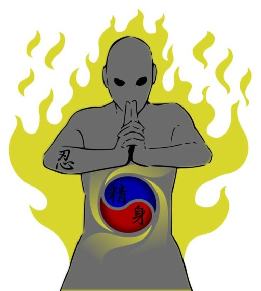
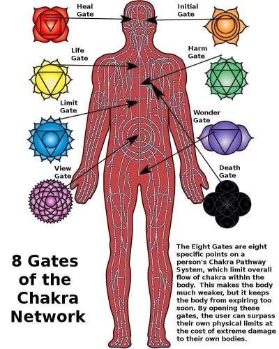

|
To perform techniques, ninja need to use their chakra. Chakra comes from two places: |
 |
Chakra flows through the body's chakra circulatory system. On a more microscopic level is these |
Focusing an equal and constant amount of chakra to a portion of the ninja's body allows them to attach their body to the touched object.
This would allow them to walk up vertical surfaces. By expelling a continuous set amount from their feet in proportion to their body weight,
the ninja can walk on water. Ninja can also focus chakra to specific limbs, which will increase the muscles' power and strength.
Chakra can also be extended from the body for attack and defense. This can take the form of the chakra strings used to manipulate puppets in Kugutsu no Jutsu.
It can also be focused to a fine point for cutting, such as in Kabuto's chakra scalpel. It can also be used to form a defensive barrier in Chakra no Tate.
The chakra in the brain and sensory organs are also the primary target of Genjutsu.
Genjutsu is created when a ninja extends their chakra flow through the cerebral nervous system of their opponent to control their minds chakra,
thereby affecting their five senses. To combat the effects of Genjutsu, there are two options.
The first option is for the ninja to stop the flow of chakra in their body, and then apply an even stronger power to disrupt the flow of the casters chakra.
The second option is to have an outside ninja unaffected by the Genjutsu make body contact, and use their chakra to disrupt the casters flow.
|
In addition to the tenketsu, the chakra circulatory system houses eight valves responsible for regulating the flow of chakra. |
 |
|